class: center, middle ## _DevOps For Ops Teams_ 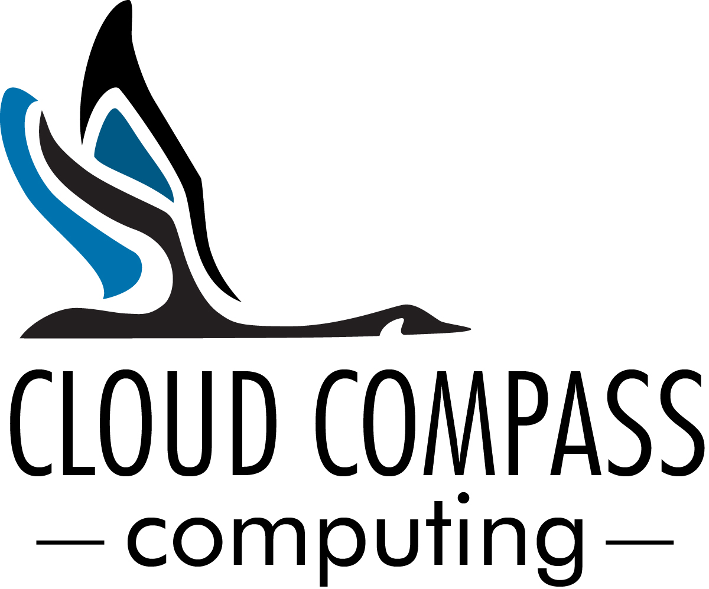 Stephen Curran, Cloud Compass Computing, Inc.<br><font size="2"><a href="https://github.com/swcurran/DevOpsFor" alt="github Repo">View it on github</a> ● <a href="https://github.com/swcurran/DevOpsFor/raw/master/DevOps4Ops/devops4ops.pdf" alt="PDF Version">Download the PDF</a></font> .center.footnote[ This work is licensed to the public under a Creative Commons Attribution 4.0 license.<br> To view a copy of this license, visit http://creativecommons.org/licenses/by/4.0/.] --- # DevOps For Ops Teams 1. .bold.red[Introduction - What's the Challenge?] 1. Agile, Continuous Delivery and the Three Ways 2. Applying DevOps 3. Tooling/Automation 4. Cross Cutting Concerns 5. Summary/Wrap-Up -- # Elephant on the Screen Oxymornic: DevOps For Ops Teams - doh! ??? DevOps usually focused on Dev Teams delivering to Ops teams We'll look at that. But the concepts, culture and tools apply in any organization delivering digital business Value Key concept you'll hear - shift left - it applies --- # Approach The course will be presented with a mixture of presentation, exercises and most importantly, .bold.red[discussion]. Please, jump in at a time with questions, comments, suggestions, snorts, etc. The goal is the material is presented in _your_ context. -- Logistics... -- * Any constraints on time? * Anything else to mention? ??? count:false # Get Started Exercise ??? http://www.liberatingstructures.com/2-impromptu-networking/ Consider using: http://www.liberatingstructures.com/3-nine-whys/ What is a unit of work? --- #Introductions: You * Operations -- * Development -- * ITIL -- * Release Management -- * Virtualization -- * Containers/Docker -- * Lean -- * Shift Left -- * DevOps --- #Introductions: Me * I walk the line - business and technology * Agile/DevOps Development leader * DevOps before DevOps - 2001 * Helping build the BC Gov Continuous Service Innovation Lab * Currently working on a variety of BC Government Projects * Coolest: Internet Identity using Blockchain 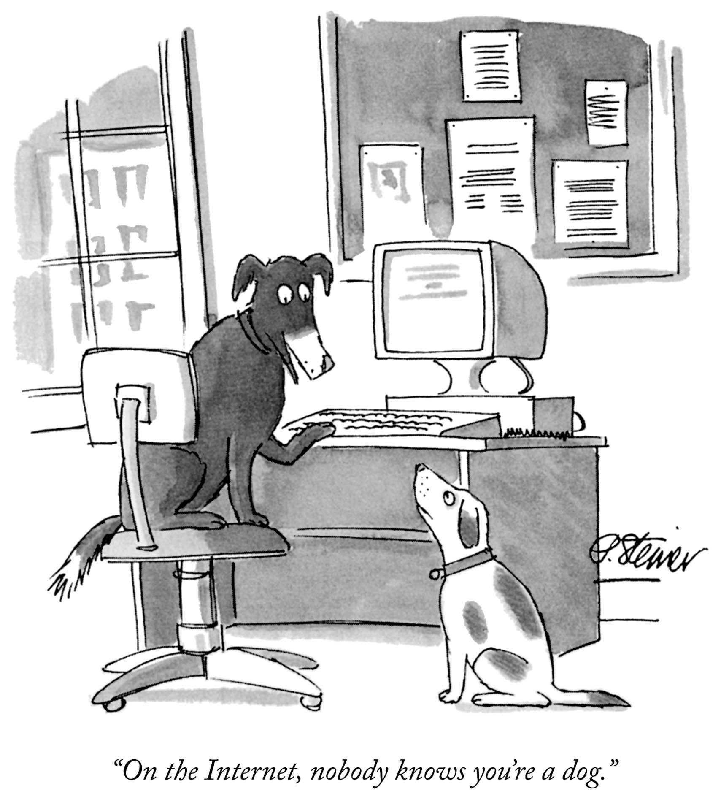 ??? Digital Services - Service Design, Agile * Software Development Management – Application Delivery * Biggest – US Federal Government HR System – Avue Central * Classification, Pay Grades, Recruiting, Performance Management * 2.5M Job Applications per year * Entry Hiring for Dept. of Justice Lawyers, Capital Police Officers * Forest Service annual Fire Hire * Crazy management * BC Government – ICM, PMO, Courts Projects * Pathfinder Projects - School Bus, Hired Equipment * Verifiable Organizations --- # What is DevOps? -- DevOps (a clipped compound of "software DEVelopment" and "information technology OPerationS") is a term used to refer to a set of practices that emphasize the collaboration and communication of both software developers and information technology (IT) professionals while automating the process of software delivery and infrastructure changes. It aims at establishing a culture and environment where building, testing, and releasing software can happen rapidly, frequently, and more reliably. .red.bold[*] .footnote[.red.bold[*] Wikipedia] -- ###Are we done here? ??? DevOps - not a straight forward "product"/"thing" * First use - Name of a conference presentation * Cultural component - improving communications and shared goals * Lean component - continuous improvement * Automation and tools So lets hold off on "What is it" and go to... --- # Why is DevOps? ### Roots - merging Developers and Operations work .left-column[ * Devs - provide the code * User Interface (UI/UX) * Business Logic/Rules * Integrations * Database (usually) Prepare applications for production. ] -- .right-column[ * Ops - run the code * Servers * Networks * Databases * Security Operate applications in production. ] ??? NOTE: DevOps is Development Methodology agnostic, but Agile requires DevOps. --- # Backup a bit - what's an app? .left-column[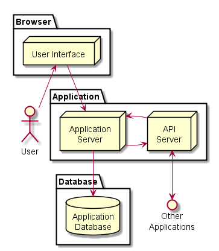] -- .right-column[ ## Examples * COTS * .NET + front end + database * Java + front end + database * MEAN (Mongo Express Angular Node) * Django (Python + front end + database) * Front End: Bootstrap, React, Backbone, Angular, etc. * Database: Postgres, SQL Server, Oracle, Mongo ] -- User Stories, usability, logic, rules... --- # Where does an app run? .left-column[<img width="90%" src="images/netarchitecture.png">] -- .right-column[ ## Ops View * Networking zones * URLs - _https://myapp.gov.bc.ca_ * Authentication - e.g. siteminder * Encryption - SSL * Firewalls * Servers * Storage ] --- # Apps map onto the Network .left-column[ <img src="images/networkzones.gif" alt="Network Zones" width="60%" > <img src="images/netarchitecture.png" alt="Canonical Web Architecture - Ops View" width="50%" > ] -- .right-column[ * Configure/secure URL - Siteminder setup * Procure Compute and Storage * Request servers * Physical Servers * VMs - Virtual Machines * Placement in proper Zone (VLAN) * Configure Software servers * Install application - when ready * Establish Connectivity * Request firewall updates * Configure software connections * Changes to compute/network? ] ??? Firewall config changes per app --- #Dev and Ops: Making it Work - In Theory <img src="images/sdlc_waterfall_model.jpg" alt="Waterfall Design" width="65%" > Meetings, documents, agreements and requests ??? Note - this is just like software development/test But this is just about deployment In government - sometimes not obvious to the developers that this needs to be done --- # However: What Ginger Hears... -- .left-column[<img src="images/WhatDevsSee.png" alt="What Devs See" width="90%" >] -- .right-column[<img src="images/WhatOpsSee.png" alt="What Ops See" width="92%" >] ??? Not Surprising and no one's fault * Devs - 100% of functionality, end user requirements, changes * Ops - 100 other apps to manage, production issues * It's not obvious what's needed * It's really hard to get budget if you can define exactly the benefit --- # Deployment ### The rubber hits the road and... -- #### ...up pops *_The Wall of Confusion_* .center[<img src="images/overthewall.png" alt="Over the Wall of Confusion" height="350" >] --- # What goes wrong? ### Ineffective Communications Communication is via Word documents - the dreaded .red[_Release Guide_] * Premise: To deploy this app, do this...and this...and this...then this... * Assumption: The writer knows the reader's world...impossible -- ###Impact: * Steps are performed manually * On-the-fly compensations are made...further invalidating the assumption * On Dev, Test and Prod ??? * Example - doing home PC support - remotely * Example - assume a piece of software is present - missing, so add it on Test. --- # What goes wrong? ###Inconsistent Environments * Developers develop in their world, deliver to a different one * Each Dev creates their own development/test capability * Execution environment doesn't match production * Minimal test data * Periodically delivers code - usually at a milestone - e.g. UAT * Agile _should_ fix that * Test data doesn't match production -- ###Impact: * It works on my machine! ??? * On first delivery try - may or may not work * Performance must be acceptable * But volume of data not considered * Options: * Get the data * Other mitigation strategies --- # What goes wrong? ### Unnecessary Dependencies * Inappropriate optimizations * Procurement/funding optimizations: time and cost * Enterprise solutions: Hammers and nails * Architectural approaches * Monolith apps -- ###Impact: * Unexpected impacts on apps * Updates to one app breaks an unrelated app * Cross-app coordination * Updates to one app causes an outage to another app * The Release Party: multiple LOBs involved in a release ??? Whys: * Because other team not available * Because unexpected impact * Solution: Look for impacts, involve other teams in releases * Because unexpected dependencies * Solution: Eliminate dependencies --- # All of which leads to... -- # Release Days .center[] .footnote[Credit: Twentieth Century Fox - _The Day After_] ??? * Users can't log in * Performance is terrible * A feature no longer works * Bugs occur * Non-Functional Requirements * Performance * Monitoring * Logging * Capacity A day - or several - fixing things ??? * Often the issues are minor and easily fixed * Rare that something unexpected and huge hits --- # The Reflex Response * We *almost* did it right, we just need to do it .red[*better*] next time * Test more - take our time, check _EVERYTHING_ -- * For now, though... .red.bold[DON'T CHANGE ANYTHING!!] -- * Except - demand builds from **_everywhere_** for fixes/capabilities -- <img src="images/WallOfConfusionChange.png" alt="The Wall of Confusion - Change" width="45%" > ??? * Checklists are really popular for this * The checklists grow continuously as more scenarios are found ??? class: center, middle That's the problem - one team creates, one team operates and there is friction in the middle And in solving that - we'll discover even more benefits Discussion - real life examples --- # DevOps For Ops Teams 1. Introduction - What's the Challenge? 1. .bold.red[Agile, Continuous Delivery and the Three Ways] 2. Applying DevOps 3. Tooling/Automation 4. Cross Cutting Concerns 5. Summary/Wrap-Up --- # Industry Response -- .left-column[## ITIL 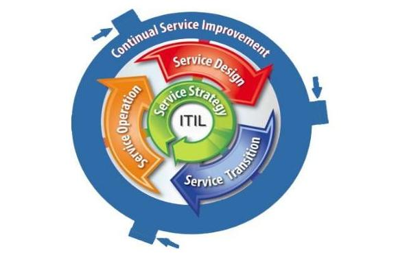 ] -- .right-column[ * Conceptually, ITIL approach is good, but implementations tend to assume: * We *almost* did it right, we just need to do it .red[*better*] next time * Plan more - add checklists, gates * Test more - take our time, check *EVERYTHING* * Culturally - directive/top down * Add administrators, Project Managers planning, checking * Not lazy ] -- .right-column[ #### Impact: * Longer release cycles but little improvement ] ??? --- ## Increasing the Challenges #### Agile Development Methodologies <img src="images/Scrum_diagram.png" alt="Scrum Release Cycle" width="60%" > * Agile says - release every sprint (or more often - every change) * If the release process doesn't change... -- ### Impossible! ??? In fact - can be worse - Lean Initiative at the Business level * Creates demand at the front end --- ## Another Approach ### How what about applying Agile... -- .left-column[#### ...to the **_value delivery process_**] -- .right-column[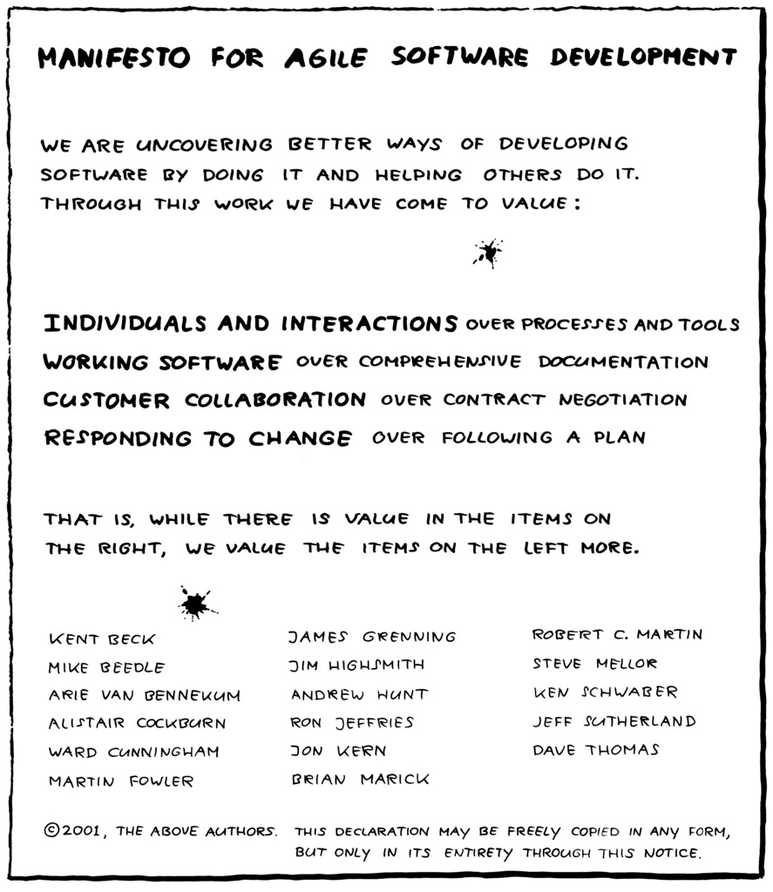] .footnote[.red.bold[*] The Agile Manifesto - http://agilemanifesto.org/] ??? * Cultural change - interactions vs. processes * Working software - not Release Guides * Customer Collaboration - is each other dev <--> ops * Responding to change --- # The Phoenix Project - Gene Kim et al. .left-column[ ### The Three Ways * Flow * Feedback * Continual Experimentation and Learning <img src="images/The-Phoenix-Project.jpg" alt="The Phoenix Project Book" width="60%" > ] -- .right-column[ ###Note * Most DevOps material focuses on Development/Ops * However: * Same principles apply for delivering any kind of digital business value * Same culture, approach, techniques and (some) tools apply ] ??? Styled after "The Goal" by Dr. Eliyahu Goldratt Production problems at a Manufacturing company - using non-traditional approaches to optimize Performance --- # The First Way: Flow (Systems Thinking) * Purpose of the system: Flow of Value * Manufacturing: Optimize inputs to outputs -- 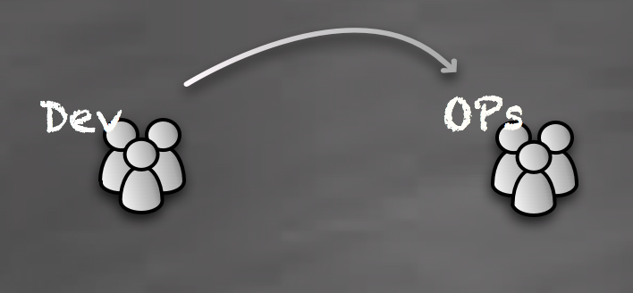 -- * End to End Thinking - .bold[*Lean*] * Global, not local, optimizations * Prevent defects from flowing * Identify and eliminate bottlenecks * **_Spoiler Alert_**: Manual processes tend to be defect and bottleneck sources... * Enable a "Roll-forward" mindset ??? Business value - nothing until product is released System end to end requires a cross-functional team Eliminating defects also means eliminating human steps --- # The First Way: Flow (Systems Thinking) * Examples * Build, Test and Deployment Automation * Consistency across environments (Sandbox, Dev, Test, Prod) * Easy environment creation - servers, connectivity, databases, etc. --- # The Second Way: Feedback * For end to end improvement: Feedback * Communication across the team -- 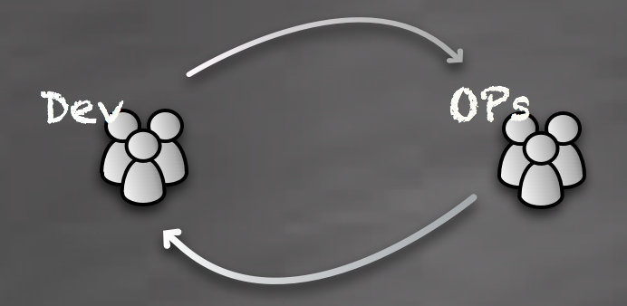 -- * Enable Global Optimizations * Communicate all the issues - fix them together * Respond quickly, adjust processes * Empower contributors * Enable understanding of .bold[*Value*] * Normalize _The First Way_ --- ## The Third Way:<br> Continual Learning and Experimentation * Theorize, Test, Evaluate - and repeat * Low risk, high return * Small batch sizes -- 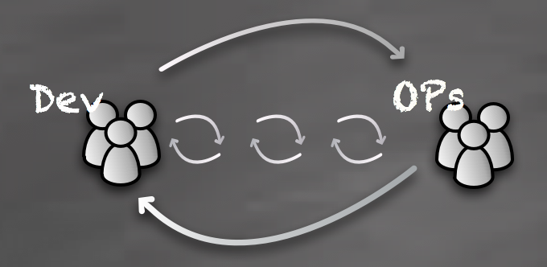 -- * Drive new business value * Faster feedback / Fast fail * More reliable processes * Better capabilities ??? * More components under control * Testing framework makes it easy to automate testing - reduces risk * Security becomes routine not an event * A-B testing allows production experimentation --- # Summary: DevOps - The Three Ways * A cultural change * End to end thinking in the application of Lean * Feedback (visibility and communication) across the full team * Managed experiments - in the form of rapid, small deliveries -- * And some really powerful tools... -- <img src="images/DevOpsHandBook.jpg" alt="DevOps Handbook" width="22%" > --- # DevOps For Ops Teams 1. Introduction - What's the Challenge? 2. Agile, Continuous Delivery and the Three Ways 3. .bold.red[Applying DevOps] 4. Tooling/Automation 5. Cross Cutting Concerns 6. Summary/Wrap-Up --- # Applying DevOps - Discussions * Getting Started: Value Stream Mapping * Organizational Structure * Work Tracking and Organization * Problem Management * Integrating Operations into Daily Work --- ## Value Stream Mapping - The First Way * Lean process * Define the bounds of the process - e.g "Adding a feature to a report" * Map the steps to go from inputs to delivered value - **end to end** * Categorize steps as adding value or not * Assess the quality of each step - rework generated, wait times * Measure the overall time for each step * Identify opportunities for improvement * Key Metric: [Value Adding Time] / [Total Time] --- 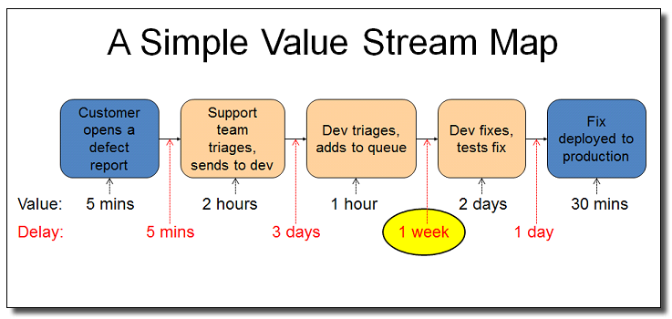 -- .center[ #### Value: 0.08 + 2 + 1 + 16 + 0.5 = 19.58 hours<br>Waste: 0.08 + 24 + 40 + 8 = 72.08 hours ### Efficiency = Value / Total Time = 19.58 / 91.66 = 21% ] ??? Cut the 1 week in the queue to 1 day, efficiency goes to: --- # Value Stream Mapping Example 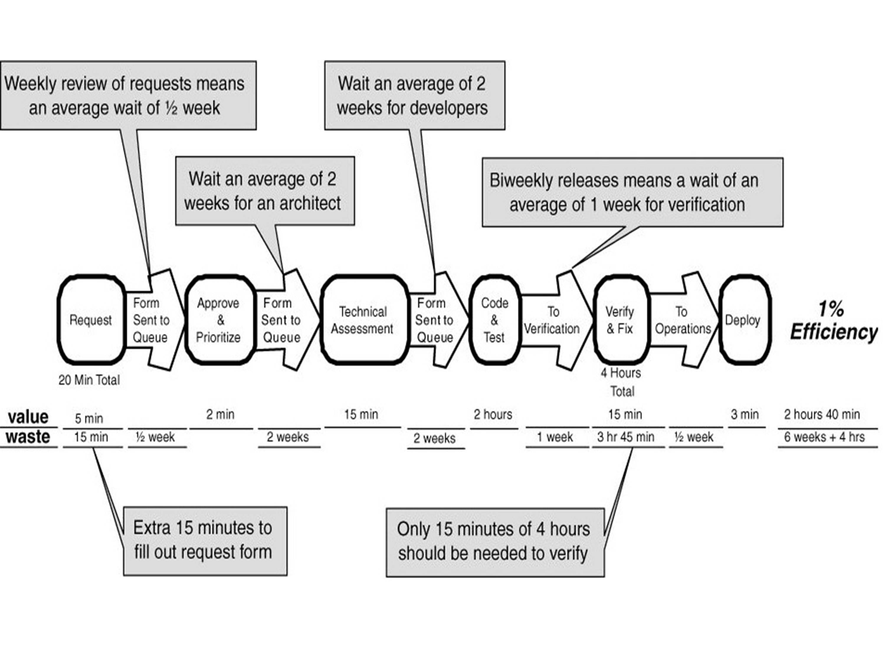 --- # Value Streams - Mapping Example ??? If we have time/very little discussion - lead Mapping Session 15 minutes - if before 11AM --- # Aside: My Team's Journey .left-column[ * Development and Ops Team * "Demanding", "Fickle" Management * "Must Have" releases - ready or not * Thrashing - jumping between features * Poor quality software * Server errors, outages ] -- .right-column[ * Approach: * Map the delivery process * Figure out what hurts the most * Stop that pain * Repeat * Steps: * Build, deploy automation * Routine production releases * Shrink release intervals * Release only "ready" code * Test automation * Results: * Value delivered much faster * Product quality went way up ] --- # Organizational Structure - Conway's Law .center.green[*"Any organization that designs a system will inevitably produce a design whose structure is a copy of the organization's communication structure."*] .left-column[ ] -- .right-column[ ### * Help Desk * Business Analyst Team * Architecture Group * Development Team * QA Team * Ops Team ] ??? Also applies to code structure - e.g. UI group, middleware group, database group Is it the right approach? --- # Organizational Structure #### When evaluating processes - be aware of Conway's Law * Should the organizational structure change to improve the process? * Should the architecture be match the organization to improve the process? * What will be the transitional impact? #### Goal: Avoid a mismatch of process and organization * Consider this during the value stream mapping process -- #### Interesting trend: monolith vs. microservices / big vs. small teams * Study of comparable Open Source projects found Conway's Law applied * Key driver/result was desire/need to remove **dependencies** ??? Picture - Monolith vs. Microservices - --- ## Work Tracking and Organization (aka JIRA) -- ### Key continuous improvement enabler * Awareness of what is being done / Visibility * No Excel! * No Email! -- * Measurement of activities - facts behind assumptions -- * Feedback to all involved -- * When tied to version control - "free" documentation * Business Reason <--> Code -- #### Don't overthink it (overtrack)<br>...but don't underthink it either. ??? * Every field needs to EARN the right to be on the form * Discussion - how is JIRA used at BC Transit? * Who uses it? * Who doesn't? * Does it drive work? --- ## Work Tracking: Kanban Board and Metrics .left-column[ 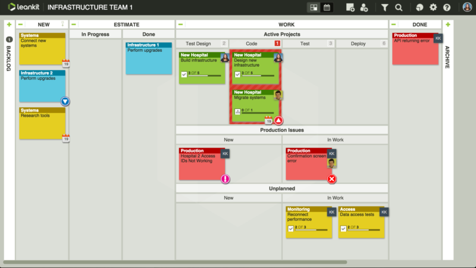 Control: * Work in Progress (WIP) * Limit items in column(s) to maximum ] -- .left-column[ #### Cumulative Flow Diagram 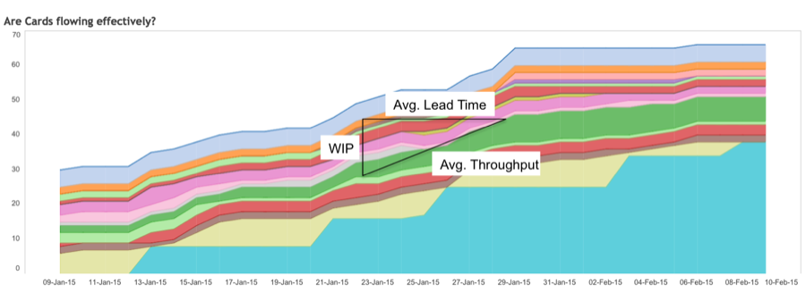 Metrics Mechanism: * Work in Progress * Average Throughput * Average Lead Time ] -- ### .center[Monitor Metrics and Experiment] ??? EXERCISE - Kanban board design - columns, WIP limits, distributing work --- ## Work Tracking: Ceremonies #### Avoiding the endless to do list -- * Regular planning * Reprioritization * Metrics review * Estimates -- * Problem Management vs. Incidents * Critical Incident Review -- * Regular retrospectives * Brainstorm - what's not working * Pick one/two * How could we make it better? * Pick one/two - do it for 2 weeks * Retrospective - working? habit? --- ## Problem Management -- .left-column[ ### ITIL Concepts * Fix the incident * Identify the problem * Document (Categorize, Track, Prioritize) * Communicate (Knowledgebase) * Address (Diagnose, Workaround, Resolution) * Report (Metrics) ] -- .right-column[ ### DevOps Spin * Fix the incident * Identify the problem * Critical incident review - .red[blameless] * The 5 Whys * Mitigate * Iterate: * Theorize: Issue and Feedback * Approach: Fix and Instrument * Backlog items * Act ] ??? 5 Whys - Roast example ## Work Tracking: Version Control Integration * Trace from business change (Issue Tracking) to code change 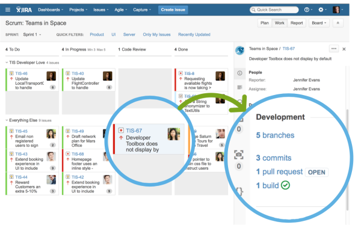 * Trace from code change to business change --- ## Integrating Operations into Daily Work -- ### Think Operations from the Start * In Software Development-focused Organizations * Include Ops on cross-functional teams * Complete end-to-end ops activities early and often * Same for any organization delivering digital business value -- ### Methods * Ops as part of * The Agile team * Retrospectives * Tasks on the Sprint/Kanban board * Visibility of ALL work --- ## Integrating Operations into Daily Work .left-column[ ### Minimum Benefit * Drastically reduce release risk * Ops deploying regularly * Production != Go Live Date - 1 ] -- .right-column[ ### Plus * Cross-training of technical resources * Increased Ops business awareness - what matters and why * Global approaches to challenges * First class operations features - patching, logging, monitoring, notifications ] ??? EXERCISE - Org Structure of their team - impact --- # DevOps For Ops Teams 1. Introduction - What's the Challenge? 2. Agile, Continuous Delivery and the Three Ways 3. Applying DevOps 4. .bold.red[Tooling/Automation] 5. Cross Cutting Concerns 6. Summary/Wrap-Up --- .center[ ### DevOps: cultural change enabled by _powerful tools_ ] 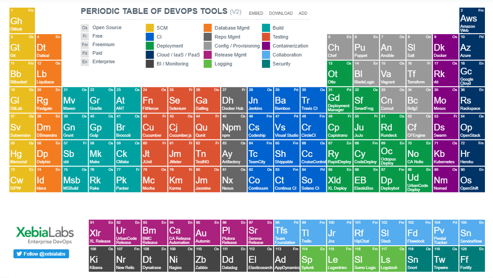 .footnote[Credit - Xebia Labs - https://xebialabs.com/periodic-table-of-devops-tools/] ??? Exercise - tools to address a section of their value stream or a pre-canned one oriented to Ops - provisioning server - collaboration and automation --- # Automation and Tools: Enabling Factors ## Open Source * Old Way: * Pay and Trust Tools Vendor (e.g. Oracle, Rational, etc.) * Closed garden * New Way: * Build what your company needs * Release the source code * Build in extensibility * Gain from the community involvement * Key contributors * Google, Facebook, Twitter, Etsy, Netflix, etc., etc. * Key Message: **Open by Default** --- # Automation and Tools: Enabling Factors ### API - Application Programming Interfaces * Integration possiblities * Continuous Integration (CI) / plugins * Integration across tools - Issue Tracking / github / CI / Test Automation * Automation possibilities * Amazon Web Services - auto-deployment, auto-scaling ??? * Contrst to Enterprise Tools - tools in isolation - * Enables best of breed - vs. monolith solution e.g. Rational -- ## Cloud Services * Outsource non-core activities * First-Class automation * Evolving to give Cloud capabilities on or off premise --- ## Deployment Pipelines (or Lifecycles) ### Replace the Release Guide with Automation .left-column[ * Multiple layers * Application Build * Application Verification * Application Functionality * Application Security * Application Deployment * Configuration as Code * "Pets vs. Cattle" ] .right-column[ <img src="images/Pets-Cattle-2.png" alt="Pets vs. Cattle" width="70%" > ] --- # Deployment Pipeline <img src="images/continuous-deployment-pipeline.png" alt="Deployment Pipeline" width="60%" > -- .left-column[ * Reliable - no human errors * Fast, easy * Eliminate production hacks * Little or (ideally) no downtime * Mid-day deploys - Whoohoo!! * Evolving - 80-20 Rule * Evolving - Adding value * Automated Feedback/Visibility ] -- .right-column[ * Other Ops opportunities * "RunBook" (documentation) to Scripts * Generate Artifacts * Release Notes * Configuration and Dependencies * Cross-Cutting Concerns (later...) ] ??? Discussion: what is the --- # Key Tools: Continuous Delivery ### Name dropping time... -- * #### .black[Version Control - git, github, gitlab] -- * #### .black[Scripting - Shell, Rundeck, Webhooks] -- * #### .black[Continuous Integration - Jenkins (job runner), xUnit Test] -- * #### .black[Release Management - XL Release] -- * #### .black[Database Change Management - Datical, Liquibase] ??? Example - ICM - 24-48 hours of orchestrated activities - 10 people in a room Common - developers best effort WARNING: COTS Software - especially from early 2000s --- # Key Tools - Infrastructure as Code -- .left-column[ * Configurable/Provisioning: * Servers - Ansible, Chef, Puppet * VMs - Vagrant * Containers - Docker * Container Orchestration - Kubernetes * In general: * What you want, not how * Format: YAML or JSON * Command Line to execute * Or to use in a script ] .right-column[ Sample Ansible Playbook - Web Server ```yaml - hosts: webservers vars: http_port: 80 max_clients: 200 remote_user: root tasks: - name: ensure apache is at the latest version yum: name=httpd state=latest - name: write the apache config file template: src=/srv/httpd.j2 dest=/etc/httpd.conf notify: - restart apache - name: ensure apache is running (and enable it at boot) service: name=httpd state=started enabled=yes handlers: - name: restart apache service: name=httpd state=restarted ``` ] --- # Key Tools: Containers and Orchestration .left-column[<img src="images/docker1.png" alt="Docker" width="100%" >] .right-column[ #### Container Benefits * Isolation - _feels like a whole computer_ * Lightweight - many per host * Create once, run everywhere * Run .bold.green[same] container dev and prod * Drastic reduction in shared dependencies * Generally: one component / container #### But... * New and evolving quickly * Complex to manage at scale * Intended use: App building blocks * But experiment on laptop/desktop ] --- # Key Tools: Containers and Orchestration .left-column[ ```yaml lb: image: dockercloud/haproxy autorestart: always links: - web ports: - "80:80" web: image: dockercloud/quickstart-python autorestart: always deploy_strategy: rolling links: - redis environment: - NAME=Friendly Users deployment_strategy: high_availability target_num_containers: 4 redis: image: redis autorestart: always deploy_strategy: rolling environment: - REDIS_PASS=password ``` ] .right-column[<img src="images/orchestration.png" alt="Kubernetes Orchestration" width="100%" >] --- # Key Tools: Cross team Collaboration -- * #### .black[Version Control - git/github/Stash] -- * #### .black[Issue Tracking - JIRA/Trello] -- * #### .black[Chat, ChatOps - Slack/HipChat] -- * #### .black[Wiki, Documentation - github/Confluence/Google Docs] --- # DevOps For Ops Teams 1. Introduction - What's the Challenge? 2. Agile, Continuous Delivery and the Three Ways 3. Applying DevOps 4. Tooling/Automation 5. .bold.red[Cross Cutting Concerns] 6. Summary/Wrap-Up --- # Section: Cross Cutting Concerns -- * #### Testing * #### Risk Mitigation * #### Security * #### Logging/Monitoring * #### Documentation (* as Code) --- ## Approaches to Testing: Traditional <img src="images/traditional_v.png" alt="Traditional V Testing" width="59%" > ??? * Unit Testing * Integration Testing * Systems Integration Testing * System Testing * Acceptance Testing * Operational Testing - does it work live? --- ## Approaches to Testing: _Shift Left_ <img src="images/Agile_DevOps_Shift_Left_Testing.jpg" alt="Shift Left - Agile and DevOps" width="80%" > ??? The first production deploy should NEVER be the day before go live!!! Verification of standards - database, security, look and feel, etc., etc. ??? --- ## Approaches to Testing: _Shift Left_ #### Iterative Process * Release Pain Points * Ongoing problems * Too much effort to do manually - automate it -- * Regression Test Frameworks - tests as a byproduct of "real" work * Unit Test Framework * API Test Framework * User Interface Test Framework -- * Non-Functional Regression Test Frameworks * Load Test Framework * Security Test Framework --- ### Approaches to Testing: Production - Early and Often -- * Regularly push builds out as far as possible * Controlled use on Production before go live * Evaluate risks and minimize * Example: Cutting off saving "real data" -- * Benefits * Ops processes executed regularly #nodrama * Users see the data in THEIR context - not test data * Best understanding and best feedback -- * Pre-Go Live testing of non-functional requirements * Real data in (controlled) production * Performance * Scalability --- ## Risk Mitigation: Many Small Releases <img src="images/ReleasePainSpiral.png" alt="Release pain spiral" width="35%" > .footnote[Credit: Spotify Engineering Culture - https://labs.spotify.com/2014/03/27/spotify-engineering-culture-part-1/] -- Big Release - Big Risk - many things to break - hard to fix<br>Small Release - Small Risk - only a few things to break - easy to fix -- Advanced - Canary Testing running two versions at the same time - splitting users ??? * Spotify!!! * This applies to Dev (every change), Test (regularly) and Prod (when Business wants) * Planning out a release - all the things to include vs. Facebook releases * ICM vs. CCD * Launching of a Rocket vs. Driving to work - adapt --- ## Risk Mitigation: Many Small Releases #### Eliminate production hacking -- .left-column[<img src="images/lessthan30minutes.png" alt="Less than 30 minute releases" width="65%" >] .right-column[ Fix Releases: done _properly_ - "Roll-forward" 1. **Issue found** 2. Issue documented - e.g. JIRA entered 3. **Issue investigated** 4. Issue fixed, checked in 5. Build / Deploy 6. Verify fix 7. Deploy to Test 8. Verify 9. Deploy To **Production**...phewwww!!! ] ??? Traditional approach - 1, 3, and fix in production --- ### Risk Mitigation: Aggressively Eliminate Dependencies -- .right-column[<img src="images/DecoupledReleases.png" alt="Decoupled Releases" width="100%" >] .left-column[] -- Fake Dependencies * Enterprise Release Scheduling - don't!! * Eliminate artificial deadlines * Dependencies on people * Dependencies on products/licenses -- Architectural Dependencies * Isolate apps / parts of apps * Different servers ($$$) * Docker, etc. * Don't share databases * But don't duplicate data - use APIs --- ## Security #### Traditional Approach * One time event for new deployments * Static analysis - Code scanning * Dynamic analysis - intrusion scanning * Patching of infrastructure - OS, Hypervisor, Database etc. -- #### Challenges * Threats are ever evolving * Much like virus definitions * Occasional urgent updates * Applications often contain many components --- ## Security #### DevOps approaches * Security in the Pipeline * As code changes, scanning performed -- * Periodic Security Scans * As the definition of "vulnerability" evolves * E.g. daily even after app is "stable" -- * Urgent deploys * Pipeline support for fast releases * Robust build, test, deploy and promote --- ## Logging/Monitoring #### Traditional Approach * Logging for Developers not Operations * Not useful to Ops -- * Logging "Set and forget" in Production * Wait until it's needed -- * Independent * Not correlated to events -- * Monitoring - service status focus - Up/Down * With a pager... -- #### Challenges * Misses out on the Second Way - Feedback * Outage detection but limited learning --- ## Logging/Monitoring (The Second Way) #### DevOps approaches * Collaboration in building logging * Data useful for Operations * Trends * Events - e.g. tracing * Dynamically adjusted * Formatted for automation - e.g. JSON vs. text -- * Consolidated Logs - one place to go * Consistent formats * Coorelated events * Data Visualizations for all participants -- * Monitoring response automation * Example: Kubernetes - automatic restarts * Example: Rundeck - "automated" Runbook - monitoring alert triggers script --- ## Documentation (* as Code) #### Traditional Approach * Parallel documentation to system * Difficult (impossible?) to keep in sync * Worse...doesn't exist -- #### Challenges * Documentation is not accurate and so not trusted * Waste of effort * Documentation is rigourously maintained to be accurate (rare) * Waste of effort --- ## Documentation (* as Code) #### DevOps Approaches * Documentation is (mostly) eliminated - converted to code * Infrastructure as code * Scripts * Deployment Pipeline * Still need higher level documents - just not the details -- * Documentation is a process by-product * Linking Issue Tracking to Version Control * Generated from source code --- # DevOps For Ops Teams 1. Introduction - What's the Challenge? 2. Agile, Continuous Delivery and the Three Ways 3. Applying DevOps 4. Tooling/Automation 5. Cross Cutting Concerns 6. .bold.red[Summary/Wrap-Up] --- # Summary #### .black[ The Three Ways] #### .black[ Culture, Automation, Lean, Measurement, Sharing (CALMS)] #### .black[ Proposal: Getting Started with DevOps] --- # The Three Ways * Flow * Focused on impacts to the _entire_ system -- * Create Feedback Loops -- * Continual Experimentation and Learning --- ### Culture, Automation, Lean, Measurement, Sharing -- .left-column[ ### Anti-Patterns * Siloed groups * New day, same pain * Little/no version control * Other Environments not like Prod * "Agile" but no DevOps * Cross Project Release Schedules * Release adventures: different every time * Post-deployment fixes without release * Endless release email chains * Pet Servers that live forever * Test Date = Start UAT Date - 1 * Production Date = Go Live Date - 1 ] -- .right-column[ ### Patterns * Collaboration on system-wide improvements * Constant elimination of bottlenecks * Version control for everything * Other Environments ~= Prod * Releases easy, getting easier * Many, many, many releases -- shift left * Early and often to test, prod * Environments are cheap - recreatable * Continuous feedback and notifications * Aggressive elimination of dependencies ] ??? CALMS --- ###What is DevOps? * We learned: * A culture of applying Lean principles to the end-to-end system * Summarized in "The Three Ways" * Flow * Feedback * Continuous Learning and Experimentation * Reduce risk by addressing it as early as possible - "shift left" * Backed by lots of powerful tools - largely developed and shared in the open --- ###Proposal: Getting Started with DevOps -- * Value Stream Mapping -- * Work Tracking -- * Regular Ceremonies around Work Tracking -- * Critical Incident Reviews -- ## Foundation: Team-based Culture --- #That's it! # ### .center[Course Feedback: https://goo.gl/6qb4yl] # #### .center[References list available for those interested in learning more]